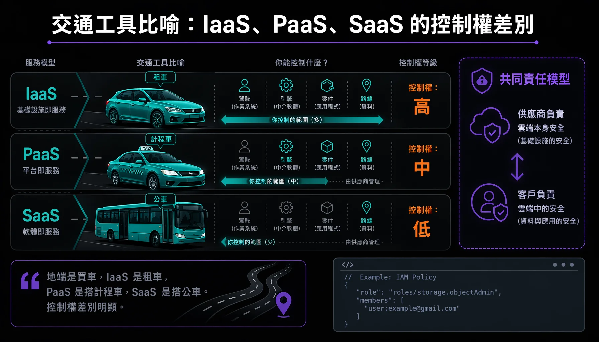

Google Cloud 學程是「Google 數位人才探索計畫」三學程之一，共 11 門課。方向以 Cloud Digital Leader（雲端數位領袖）為主，聚焦於雲端的應用與業務驅動，重視概念層面。對象橫跨非技術背景的商業決策者與想入門的技術人，多門課明說不需要技術經驗。本文將課程分為五群，並整理每門課的核心觀念。
這是 Google 數位人才探索計畫三篇學程紀錄的第三篇。計畫總覽在總覽篇，同系列另兩篇：AI 職場通識、數位行銷。

# 學程在教什麼
學程旨在建立對雲端運算、基礎架構、網路安全、資料轉型、雲端 AI，以及成本治理與營運可靠度的全面理解。課程內含計分式知識評量，通過才取得學分。相關的認證路徑包括 Cloud Digital Leader（《Scaling with Google Cloud Operations》是這條路徑的收尾課）與 Gen AI Leader（《生成式 AI：瞭解基礎概念》是該認證的第二門）。其中《Cloud 運算基礎知識》完成評量後可獲得四種數位技能徽章。
# 一、Cloud 基礎概念與基礎架構
這群在學雲端是什麼、三種服務模型怎麼分、Google Cloud 的整體架構與運算儲存選項。
- Digital Transformation with Google Cloud — 把數位轉型定義為用新技術改造業務流程、文化與顧客體驗。最具體的觀念是六種 IT 部署方式（地端、私有雲、公有雲、混合雲、多雲）與 IaaS／PaaS／SaaS 的買車、租車、計程車、公車比喻；以及成本從資本支出轉向營運支出的核心財務轉變。
- Cloud 運算基礎知識 — 雲端五項特點（隨選自助、多元網路存取、資源集區、機動彈性、依量付費）；三波技術浪潮，包括主機代管、虛擬化與容器化全自動彈性；Google Cloud 三層架構；五大運算選項（Compute Engine、App Engine、Cloud Run functions、GKE、Cloud Run）。
- Google Cloud 基礎架構 — 補齊儲存、API、安全三塊。五大儲存產品選型（Cloud Storage、Cloud SQL、Spanner、Firestore、Bigtable）；Cloud Storage 四種儲存級別；以及 Google 五層安全模型、共同責任模型、四種加密選項、IAM 最小權限。
# 二、網路與安全性
- Google Cloud 的網路與安全性 — 虛擬私有雲（VPC）是全域資源，子網路才是區域層級；兩種子網路模式（自動模式擴展上限、自訂模式完全自管，自動可單向轉自訂不可逆）。混合雲四種連線（Cloud VPN、直接對接、Dedicated 與 Partner Interconnect）。安全與維運涵蓋 Cloud Armor 減緩 DDoS、使用 Terraform 寫基礎架構即程式碼，以及 Cloud Observability 的五大功能。
# 三、數位轉型與資料轉型
- Exploring Data Transformation with Google Cloud — 資料三型態（結構化、半結構化、非結構化，後者佔企業新資料八九成卻分析率不到 1%）；三種資料平台的分工（資料庫為存取設計、資料倉儲 BigQuery 為分析設計、資料湖存原始資料）；儲存選型決策樹；資料價值鏈六階段與串流分析（Pub/Sub 加 Dataflow），以及 Looker 的網頁式 BI。
# 四、Cloud 上的 AI 與 Vertex AI
這群在學 AI／ML 是什麼、Google Cloud 怎麼讓人建模型、Vertex AI Studio 怎麼用提示打造生成式 AI 應用。
- Innovating with Google Cloud Artificial Intelligence — AI 是總稱、ML 是子集；ML 適合解的四類問題；四種建模途徑由快到客製（BigQuery ML 用 SQL、預訓練 API 直接用、AutoML 無程式碼、自訂訓練最有彈性）；TPU 讓同一運算從 GPU 的 26 小時縮到 7.9 分鐘。
- 生成式 AI：瞭解基礎概念 — AI 與 ML 的層級關係，以及深度學習、基礎模型、LLM 與擴散模型的演進（Gemini、Gemma、Imagen、Veo）。課程亦探討基礎模型的六大限制與克服技術，包括接地、RAG 三階段、提示工程、微調與人機協作。
- Vertex AI Studio 簡介 — 從提示走到正式應用的單一開發環境。提示三要素（任務、脈絡、樣本）；零樣本與少量樣本；三個模型參數（溫度、Top-K、Top-P）；調整層級由低到高（提示設計、高效參數調整、全面微調）。
# 五、營運與負責任 AI
這群在學上雲後怎麼控成本、保可靠度、做永續，以及怎麼負責任地開發 AI。
- Scaling with Google Cloud Operations — 雲端財務治理涵蓋人、流程與技術三面向，通常以雲端卓越中心集中管理。資源階層分為四層（資源、專案、資料夾、組織），透過繼承機制落實最小權限。課程亦介紹 SRE 的四大黃金訊號（延遲、流量、飽和度、錯誤）及 SLI、SLO、SLA 的層級，並以 2030 年完全無碳為永續目標。
- 負責任的 AI 技術 — 核心理念是負責任的 AI 等於成功的 AI，強調決策權始終在人，AI 的每個階段都有人類價值觀介入。Google 三大支柱與七項 AI 應用目標加四項不予開發領域；靠一連串提問來偵測問題。個案：名人辨識 API 用膚色量表重新標記後，發現深膚色男性錯誤拒絕率近 100%，根因在訓練集與圖片庫年齡分布落差，靠擴充各年齡資料修正。
（學程另有一門「在 Agent Platform 設計提示」是純動手 Lab，沒有逐字稿教材。）
# 三個記憶點
- IaaS／PaaS／SaaS 的交通工具比喻加共同責任模型 — 地端是買車、IaaS 是租車、PaaS 是搭計程車、SaaS 是搭公車，一句話講清三種服務模型的控制權差別。再接共同責任模型：雲端本身的安全由供應商負責、雲端中的安全由客戶負責，客戶永遠對自己的資料負責。
- Google Cloud 的儲存選型決策樹 — 能依情境選對產品是雲端素養的硬指標：非結構化選 Cloud Storage、交易型用 SQL 選 Cloud SQL 或 Spanner、交易型免 SQL 選 Firestore、分析型用 SQL 選 BigQuery、分析型 NoSQL 選 Bigtable。
- Vertex AI 四種建模途徑加生成式 AI 的接地與 RAG — 建模四階梯（BigQuery ML、預訓練 API、AutoML、自訂訓練）門檻與客製度遞增；生成式 AI 的幻覺痛點靠接地與 RAG 三階段把回答錨定到可驗證來源。TPU 把同一運算從 26 小時縮到 7.9 分鐘很適合當亮點。